Manual técnico de auditoría e infraestructura
Portafolio web profesional multimedia interactivo: maquetación semántica y accesible, arcade en Canvas 2D y Three.js, experiencia WebAR con A-Frame/WebXR, almacenamiento local y despliegue continuo con HTTPS.
Autora
Danna Rueda
Ingeniería Multimedia
Producción
https://dannavalentinar11-beep.github.io/blackdot-portafolio/
Fecha
Noviembre 2026
Introducción
BLACKDOT es un sitio estático (HTML5, CSS3 y JavaScript sin frameworks) publicado en GitHub Pages. Integra cinco vistas, seis videojuegos, un visor 3D de personajes y un showroom WebAR.
Este manual documenta la arquitectura real del código, las auditorías ejecutadas (W3C y Lighthouse móvil) y la infraestructura de red que permite usar la cámara de forma segura en el teléfono.
Todas las cifras de este documento salen de pruebas ejecutadas el 25-26/11/2026; los informes originales están en docs/evidencias/.
Arquitectura de software
Mapa de navegación
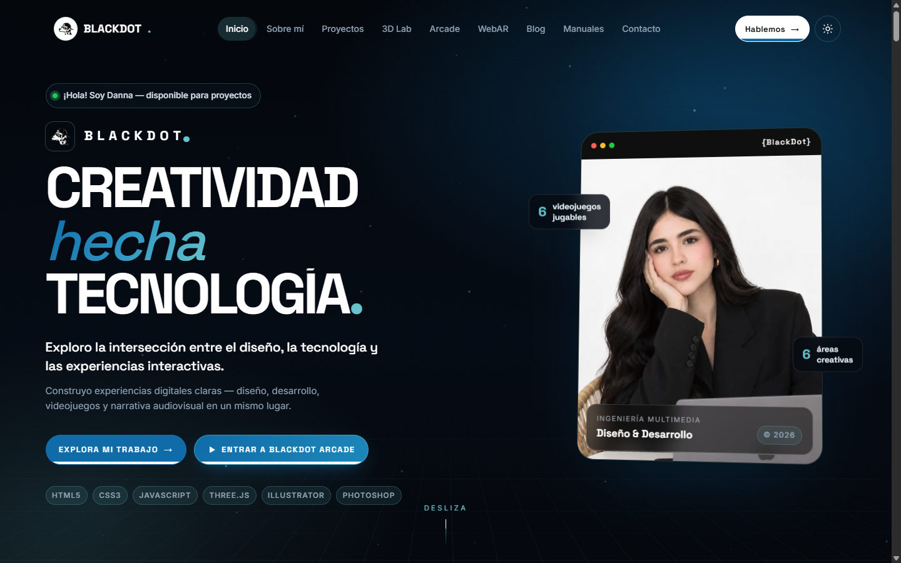
index.html · Inicio, sobre mí, proyectos, 3D Lab, cinemática, herramientas, manuales
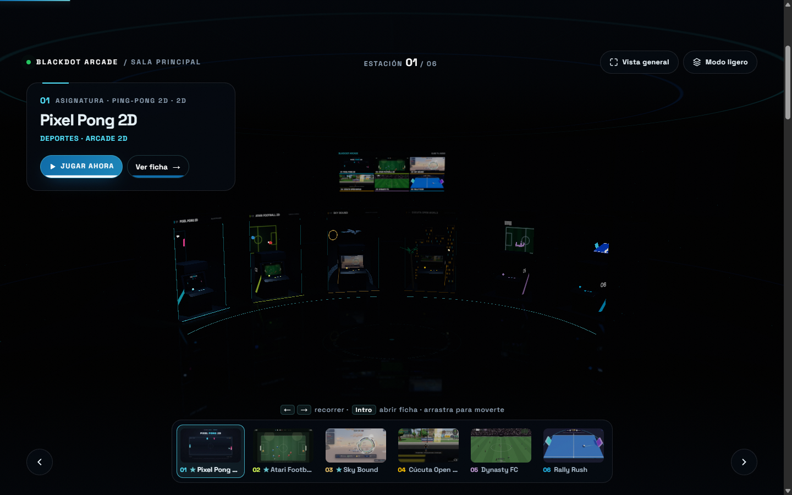
arcade.html · Sala 3D, métricas, Salón de la fama
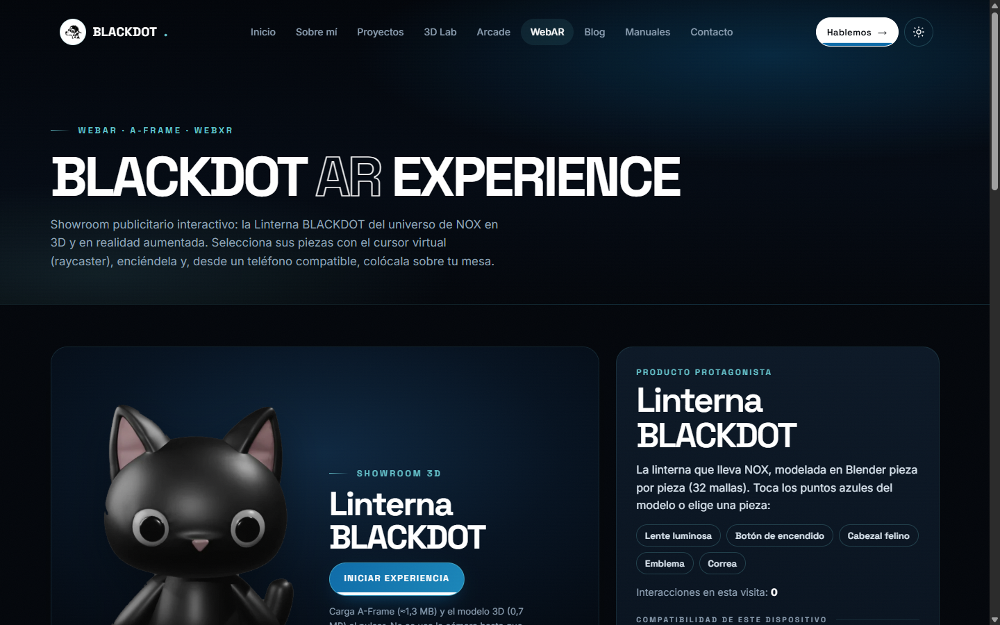
ar-experience.html · Showroom WebAR
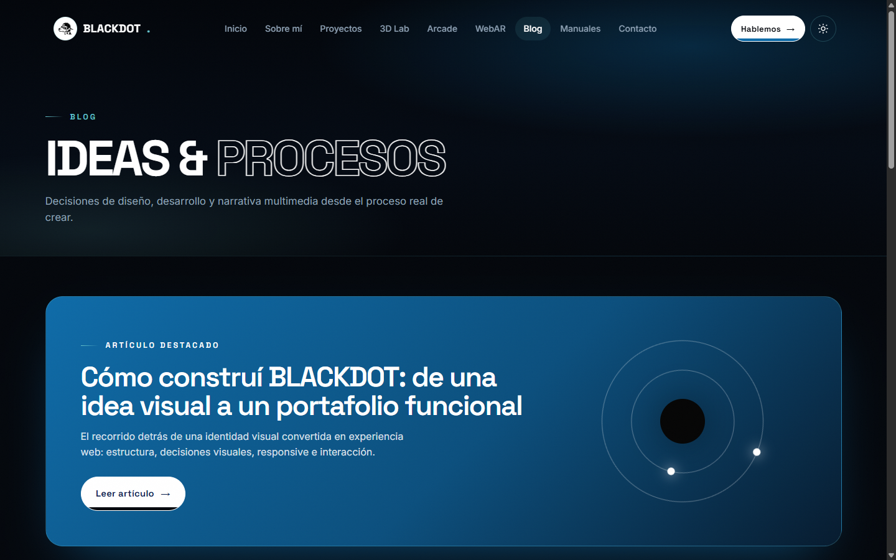
blog.html · Artículos con filtros
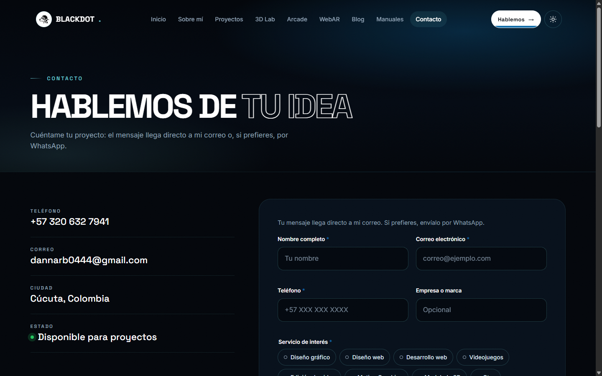
contacto.html · Formulario + WhatsApp
docs/pipeline/construir_paginas.py: cabecera, footer y tema idénticos en todas las vistas04Mapa de funciones JavaScript
read() · write() · validMetrics() · getMetrics() · track() · resetMetrics()
Se carga primero: cuenta la visita y expone window.BDStore.
boot() → initTheme() initHeader() initModals() initReveal() initProjects() initTools() initBlog() initContact() initGames() → playGame() mountFrame() closePlayer()
init() select() openSheet() setMode() startEngine() → createArcade() frame() focusTarget() setTheme() dispose()
sync() lee el guardado de cada juego con un adaptador · render() · refresh() (evento storage) · panel: render()
loadLibs() createViewer() setModel() makeSegment() play() keepInPlace() disposeModel() initCinematic()
checkSupport() loadAFrame() registerComponents() start() setMode() startCamera() enterAR() showPart() doAction()
Juegos Canvas 2D — pingpong.js: start() update() aiUpdate() render() loop() endMatch() · futbol.js: startGame() readInput() aiUpdate() keeperUpdate() updateBall() collideBallPlayers() scoreGoal() loop() save()
Componentes A-Frame
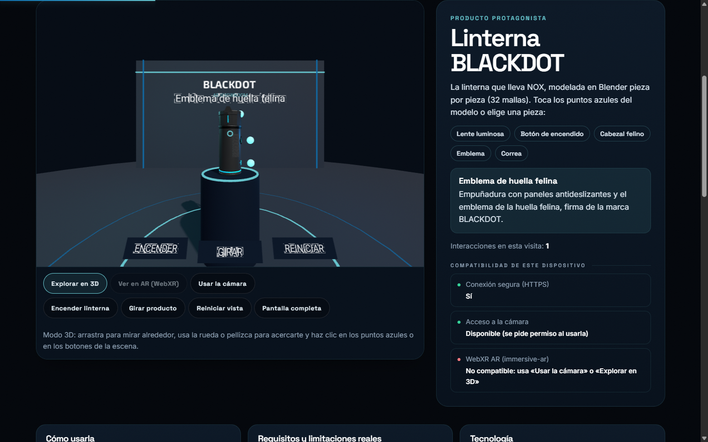
Escena real: linterna en el pedestal, puntos interactivos, botones 3D y ficha de la pieza seleccionada.
<template id="ar-scene-tpl">)a-scene webxr · ar-hit-test · cursor · raycaster · shadow
├─ a-assets › a-asset-item linterna-blackdot.glb
├─ #bd-rig › a-entity camera look-controls · wasd-controls
│ └─ #bd-gaze cursor (fuse) · raycaster
├─ luces ambient · directional · 2 × point
├─ #bd-environment hide-on-enter-ar › a-sky · a-circle · a-ring · a-text
└─ #bd-product-root (objetivo del hit-test)
├─ #bd-product gltf-model · bd-product · animation__spin
│ ├─ 5 × a-sphere.bd-click bd-hotspot
│ └─ #bd-beam · #bd-beam-light
└─ 3 × a-plane.bd-click bd-button
bd-product: sombras y control de los materiales emisivos al cargar el modelo.bd-hotspot: ancla cada punto al centro real de una pieza (Lente_Frontal, Boton_Encendido…).bd-button: botón 3D con estados hover/click que ejecuta encender, girar o reiniciar.Arquitectura WebAR
La cámara solo se pide al pulsar «Usar la cámara» o «Ver en AR», y se apaga al salir de la pestaña.
Sin HTTPS, sin permiso o sin WebXR, la experiencia continúa en el modo 3D con un mensaje claro.
El modo 3 es una superposición: no ancla el modelo a superficies reales (documentado en la página).
Persistencia local
| Clave | Contenido |
|---|---|
blackdot-theme | tema elegido |
blackdot-metrics-v1 | visitas, páginas, partidas por juego, modelos 3D, sesiones e interacciones WebAR, envíos |
blackdot-hall-v1 | mejor marca por juego y fecha |
blackdot-pixelpong-v1 | Ping-Pong 2D: estadísticas e historial de marcadores |
blackdot-football | Fútbol 2D Atari: estadísticas e historial |
skybound.* · rallyrush_v1 · dynastyfc.progress · cow_save_v1_* | guardado propio de cada juego 3D |
blackdot-arcade-mode | sala 3D o modo ligero |
read(key, validate, fallback): JSON.parse protegido + validación de forma; si falla, se usan valores por defecto y se avisa en consola.write() captura cuota llena / modo privado.n()): nunca negativos ni NaN.Tres arranques independientes de Chrome con el mismo perfil: juego guardado → tema cambiado → al reabrir: tema claro recordado, 2 visitas, marcador 0–0 en el historial y «Récord registrado».
Arcade de la asignatura
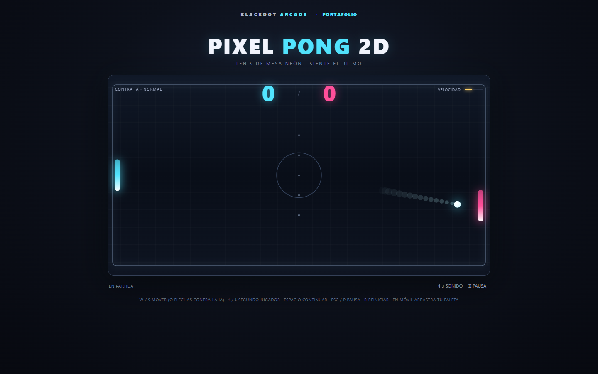
Ping-Pong 2D (Canvas 2D) · vs IA, 2 jugadores, desafío · R reinicia
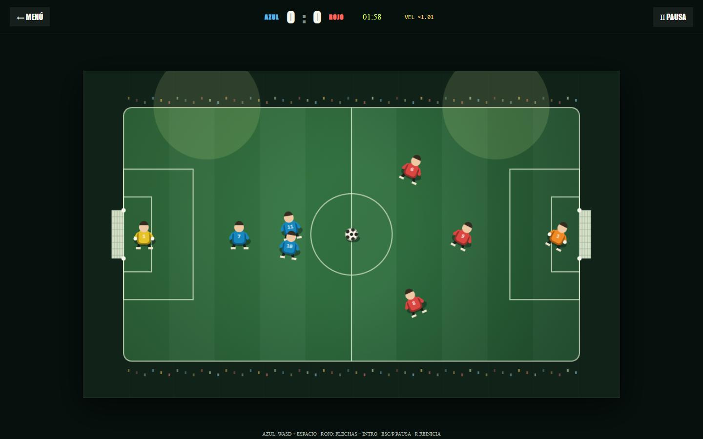
Fútbol 2D Atari (Canvas 2D) · vs CPU y 2 jugadores · marcador · R reinicia
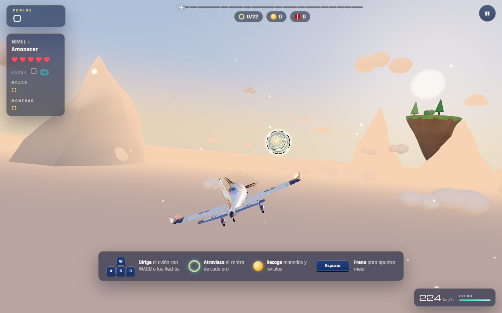
Sky Bound (Three.js r160) · vuelo entre aros y batalla aérea
requestAnimationFrame con dt acotado (≤ 33 ms) para que la física no salte; dibujo y lógica separados (update() / render()); la sala 3D se detiene fuera de pantalla y baja la resolución si no alcanza ~35 FPS.
Cada juego vive en un iframe que se destruye al cerrar (about:blank); el visor 3D libera geometrías, materiales y texturas (dispose()) al cambiar de modelo; Three.js y A-Frame se cargan solo bajo demanda.
Certificado de calidad · W3C
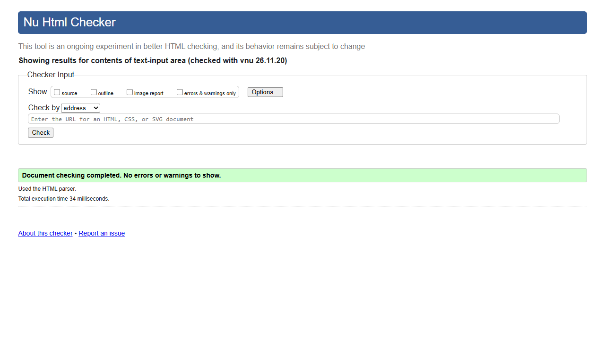
index.html · «No errors or warnings to show»
arcade.html
ar-experience.html
| Vista | Errores | Avisos |
|---|---|---|
| index.html | 0 | 0 |
| arcade.html | 0 | 0 |
| ar-experience.html | 0 | 0 |
| blog.html · contacto.html | 0 | 0 |
h3 dentro de tarjetas role="button" → botón real dentro del título.dl del perfil con dt/dd correctos.aria-label en div → role="region" / role="list".<main> duplicado en las vistas generadas.Certificado de calidad · Lighthouse móvil
| Vista | Rendim. | Accesib. | Buenas pr. | SEO |
|---|---|---|---|---|
| index.html | 91 | 100 | 100 | 100 |
| arcade.html | 98 | 100 | 100 | 100 |
| ar-experience.html | 99 | 100 | 100 | 100 |
| blog.html | 94 | 100 | 100 | 100 |
| contacto.html | 99 | 100 | 100 | 100 |
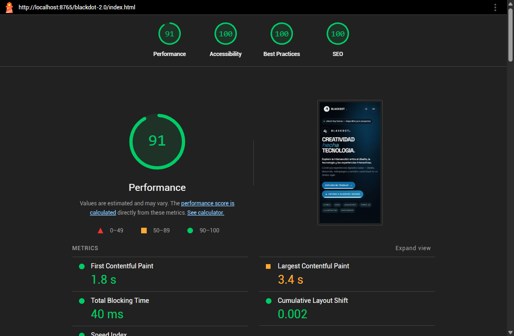
Lighthouse 12.2.1 · móvil (emulación + red simulada) · servidor estático con gzip, igual que GitHub Pages.
Auditoría ejecutada sobre la versión local antes de publicar. Informes HTML completos en docs/evidencias/lighthouse/.
Infografía de infraestructura
Hosting
dannavalentinar11-beep/blackdot-portafoliomain, carpeta raíz.nojekyll: se sirven los archivos tal cual/blackdot-portafolio/ (subruta del repositorio)5
vistas HTML
6
videojuegos
4
modelos GLB
0
dependencias npm en producción
Protocolos
$ curl -I http://dannavalentinar11-beep.github.io/blackdot-portafolio/
HTTP/1.1 301 Moved Permanently
Location: https://dannavalentinar11-beep.github.io/blackdot-portafolio/
$ curl -I https://…/blackdot-portafolio/
HTTP/1.1 200 OK
Server: GitHub.com
Strict-Transport-Security: max-age=31556952
Cache-Control: max-age=600
Content-Type: text/html; charset=utf-8
getUserMedia() (cámara) y navigator.xr (WebXR) solo existen en contextos seguros. La página lo comprueba con window.isSecureContext y lo muestra en «Compatibilidad de este dispositivo».
Con Strict-Transport-Security el navegador recuerda durante un año que debe usar HTTPS, incluso si alguien escribe http://.
Google Fonts, jsDelivr (Three.js, Draco), aframe.io, cdnjs (GSAP) y FormSubmit se cargan por HTTPS: sin contenido mixto.
Servicio DNS
| Tipo | Valor (consulta real) |
|---|---|
| A | 185.199.108.153 |
| A | 185.199.109.153 |
| A | 185.199.110.153 |
| A | 185.199.111.153 |
| AAAA | 2606:50c0:8001::153 |
| AAAA | 2606:50c0:8002::153 |
| AAAA | 2606:50c0:8003::153 |
El subdominio dannavalentinar11-beep.github.io pertenece a la zona de GitHub, que lo resuelve a sus direcciones de Pages (IPv4 e IPv6). No hace falta configurar registros propios.
Para usar un dominio propio bastaría un registro CNAME hacia dannavalentinar11-beep.github.io (o registros A a las IP anteriores) y el archivo CNAME en el repositorio. No se usa en este proyecto.
Certificado SSL / TLS
| Campo | Valor (openssl s_client) |
|---|---|
| Sujeto | CN=*.github.io |
| Emisor | Let's Encrypt · CN=YR1 |
| Válido desde | 30 sep 2026 23:44 GMT |
| Válido hasta | 29 dic 2026 23:44 GMT |
| Nombres alternativos | *.github.io, github.io, *.github.com, *.githubusercontent.com… |
| Protocolo | TLSv1.3 · TLS_AES_128_GCM_SHA256 |
El certificado cubre cualquier subdominio de github.io, por eso la URL del portafolio es segura sin trámites adicionales.
GitHub renueva el certificado antes del vencimiento (ciclo de 90 días de Let's Encrypt). Las fechas cambiarán con cada renovación.
Integración y despliegue continuos
.github/workflows/actualizar-divinevanity.yml: cada lunes captura divinevanity.co con Chrome sin ventana, valida la imagen (tamaño y variedad de color) y solo publica si cambió.
Se validan las 5 vistas en el W3C y Lighthouse móvil; nada se publica sin autorización de la autora. El historial de Git permite volver a cualquier versión.
Pruebas ejecutadas
| Prueba | Método | Resultado |
|---|---|---|
| 5 vistas abren, enlaces internos válidos, sin errores de consola | Chrome sin ventana (CDP) | Aprobada |
| Modo claro / oscuro global y persistente | Cambio de tema + reapertura del navegador | Aprobada |
| Ping-Pong 2D: vs IA y 2 jugadores, paletas, reinicio, historial | Teclado simulado en tiempo real | Aprobada |
| Fútbol 2D Atari: vs CPU y 2 jugadores, reinicio, marcador guardado | Teclado simulado en tiempo real | Aprobada |
| Aviones 3D (Sky Bound): crear piloto y volar el nivel 1 | Interacción automatizada + captura | Aprobada |
| WebAR: escena, modelo (32 mallas), 5 hotspots, raycaster con ratón | Clics proyectados sobre el lienzo | Aprobada |
| Marcadores y métricas persisten tras cerrar el navegador | 3 arranques con el mismo perfil | Aprobada |
| Responsive 390 px sin desplazamiento horizontal | Emulación móvil | Aprobada |
| WebXR immersive-ar y cámara en teléfono real | Requiere dispositivo físico | Pendiente en la sustentación |
Conclusiones técnicas